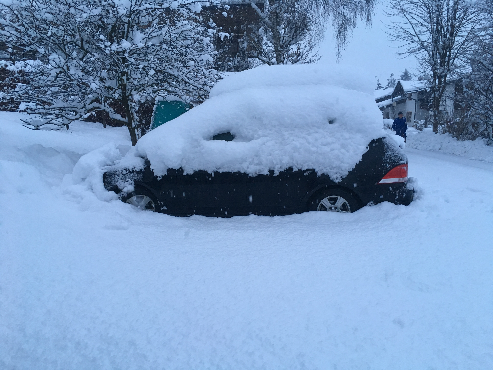

It's been a busy year for us in 2019 — snowy mountains, sandy deserts, and Aussie beaches — so we’d thought we’d write a quick year in review. Here’s how it went down ...
After a rather inauspicious start, 2019 greeted us with what was possibly the snowiest winters in living memory. Nearly 3m of snow fell in 10 days cutting off valleys and shutting down most resorts. The army was called in, helicopters flew low across the autobahn to clear snow from the trees, and Dave had to dig the car out twice a day.
Once the sun came out, we had a glorious season with deep pow and blue bird days. We had some lovely visits from friends and family, and the kids enjoy the weekends in the park or race piste.

Spring was truly gorgeous. The lower snows melted, the valley turned a thousand amazing shades of green, and the cows stretched their legs in the meadows. Meanwhile, regular dumps upstairs made for delicious spring off piste skiing.
We'd ski in the mornings and swim or chill in the gardens in the afternoon. Everything was perfect ... except perhaps the 'gylle' - the stench of 6 months cow manure spread spread across every blade of grass. Things don't get this green without a little help!
We finished up spring with a short holiday in Vienna to celebrate the boy's birthdays before Dave headed south to Egypt and Australia.


While Dave worked back in Australia, Tina and the kids spend some time visiting family. Silje's birthday wish was for a family experience so we jumped in the time machine and headed back to 1857 Denmark.
And what an "experience". Living like a 19th century landbrugs familie without electricity, running water, a flushing toilet, or perhaps even dignity, we certainly learnt to appreciate modern life. Silje loved it but Dave was not so convinced! But the weather was glorious and 11pm sunsets made up for the many head bumps on low door ways.
We headed back to the Alps for late summer and spent the next few weeks riding bikes and hiking to alpine hütten. No matter how long we spend here, we never get sick of this scenery.


September saw days starting to get shorter and the leaves turning red and orange. The cows came down from their high pastures and we started a new lifestyle experiment - home schooling.
The local village school had been great for the kid's German skills but Austrian schooling is rather inflexible with attendance requirements. School holidays are when we want to be in the valley and with Dave working 3-4 months each year in Australia, the separation was becoming more and more difficult.
So we applied to the school board, collected some text books, and proceeded to spent A LOT of time together at the dinner table. The jury is still out on whether home schooling will work but it has granted us enormous flexibility.
Which meant that after a few days of early season skiing on the glacier, we backed our bags and headed back to Oz via Abu Dhabi.
It had been two years since Tina and the kids had been to Australia and we were a little nervous about old friends growing apart. As soon as we arrived however, it was as if we'd never left. We had a great five weeks and didn't want to leave. Well, almost!
While we were away, Frau Holle had visited the Alps. We returned to find the valley covered in snow and quickly got back into the swing of mornings on the slopes and afternoons working and home schooling.
Christmas sneaked up on us very fast this year and after a quick visit to Denmark, we can't wait to find out what 2020 holds in store for us. To all our friends and family around the world, we wish you a very merry Christmas and a happy new year.
We miss you all and hope to catch up again soon!
Dave, Tina, Silje, & Kasper.